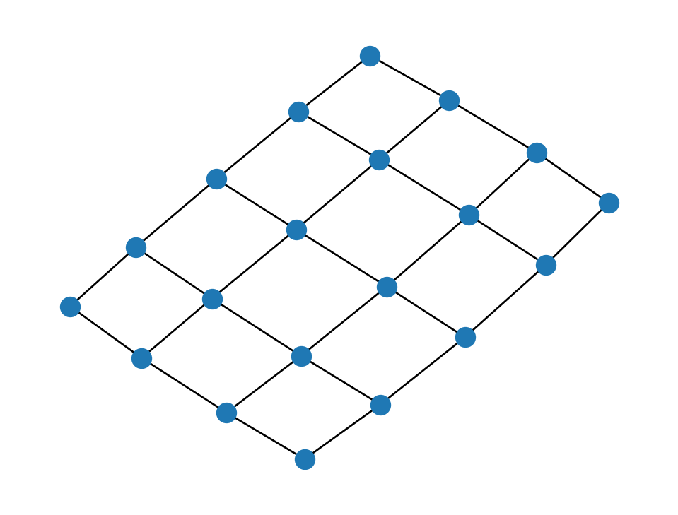
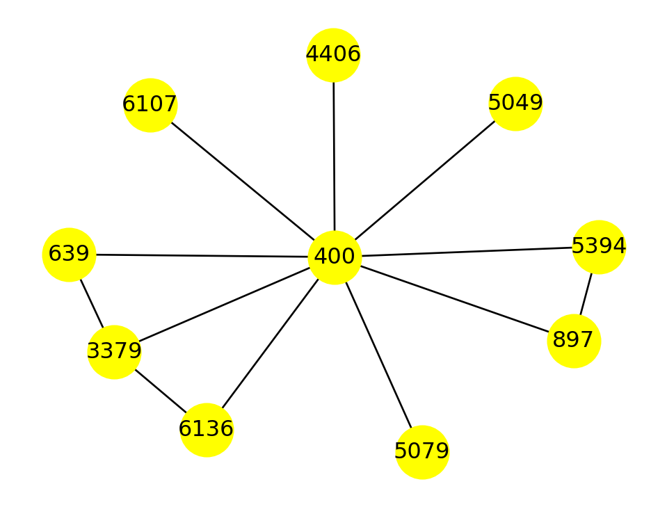
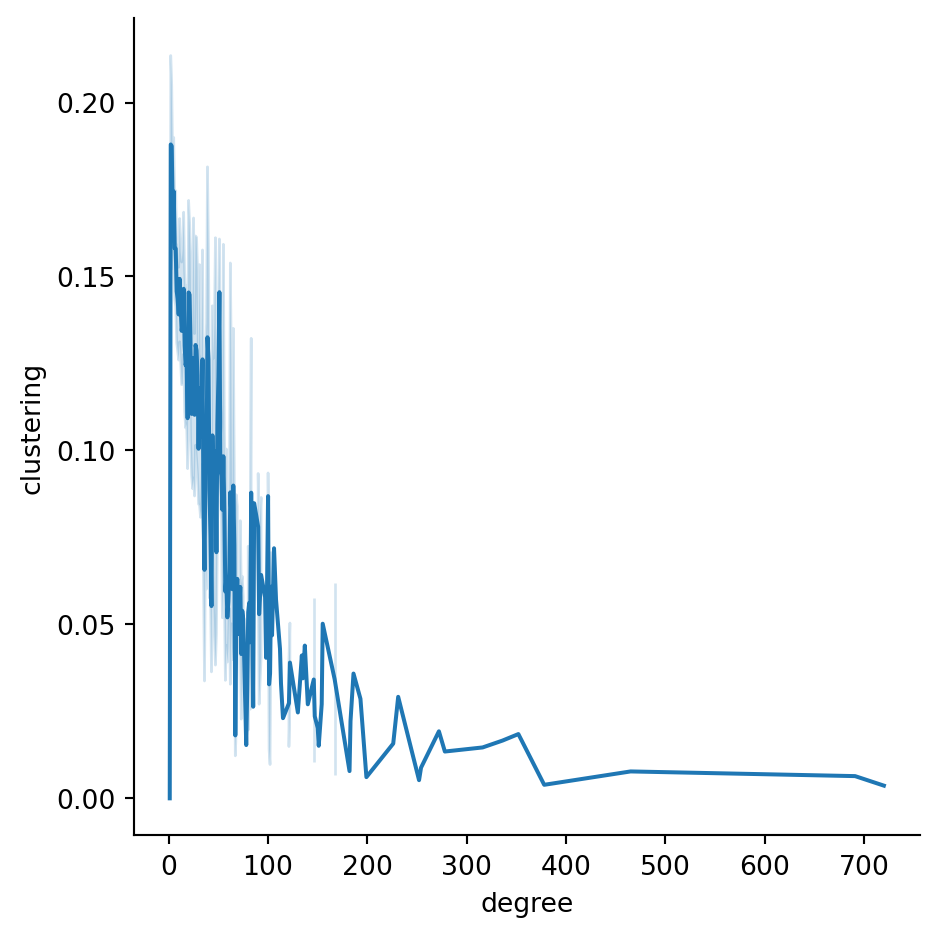
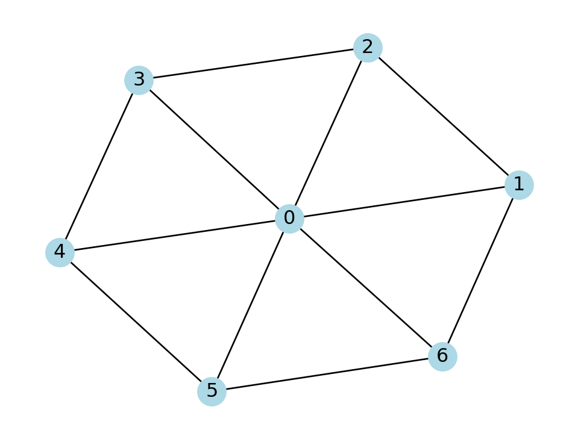
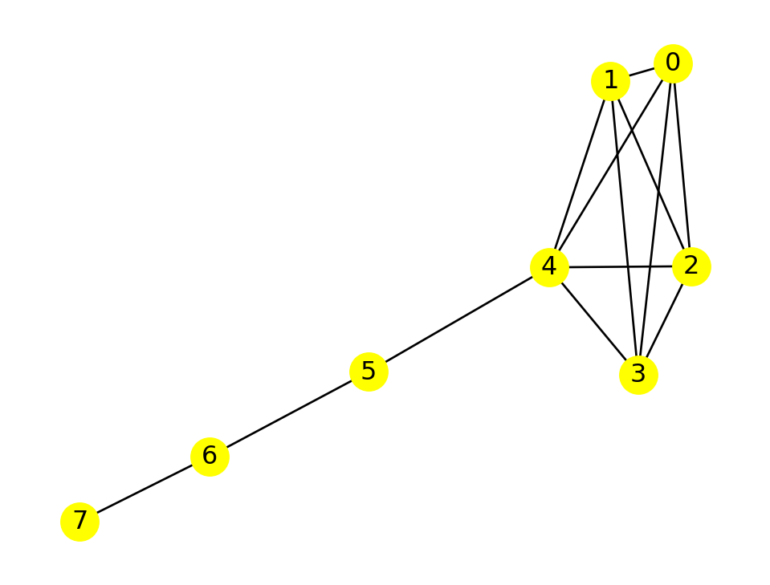
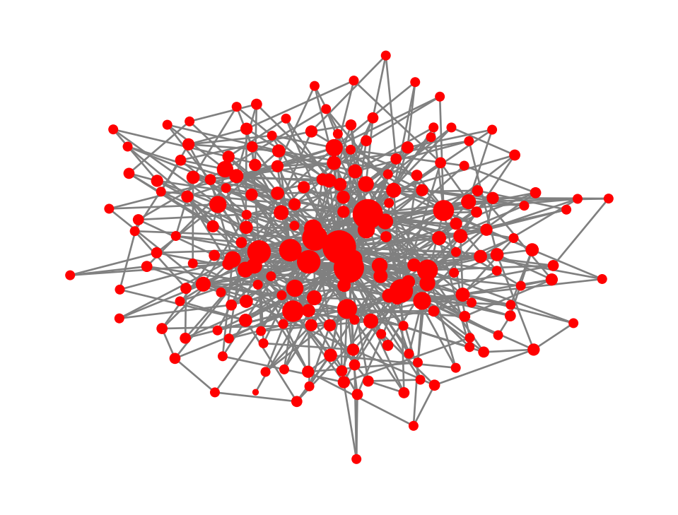
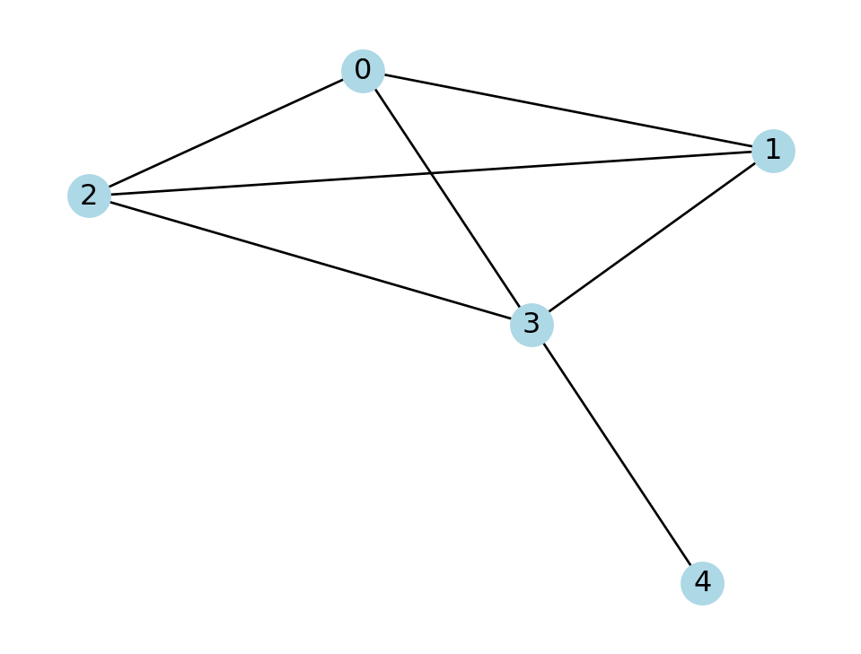
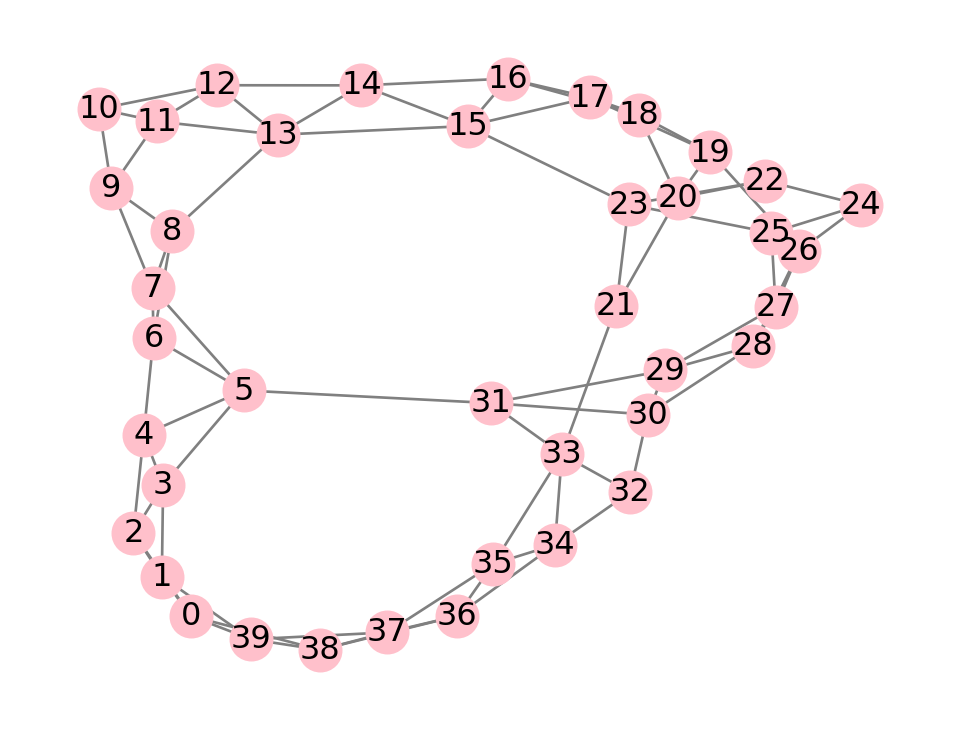

Code
import numpy as np
from numpy.random import default_rng
import pandas as pd
import seaborn as sns
import matplotlib as mpl
mpl.rcParams["figure.figsize"] = [4.8, 3.6]\[ \newcommand{\float}{\mathbb{F}} \newcommand{\real}{\mathbb{R}} \newcommand{\complex}{\mathbb{C}} \newcommand{\nat}{\mathbb{N}} \newcommand{\integer}{\mathbb{Z}} \newcommand{\bfa}{\mathbf{a}} \newcommand{\bfe}{\mathbf{e}} \newcommand{\bfh}{\mathbf{h}} \newcommand{\bfp}{\mathbf{p}} \newcommand{\bfq}{\mathbf{q}} \newcommand{\bfu}{\mathbf{u}} \newcommand{\bfv}{\mathbf{v}} \newcommand{\bfw}{\mathbf{w}} \newcommand{\bfx}{\mathbf{x}} \newcommand{\bfy}{\mathbf{y}} \newcommand{\bfz}{\mathbf{z}} \newcommand{\bfA}{\mathbf{A}} \newcommand{\bfW}{\mathbf{W}} \newcommand{\bfX}{\mathbf{X}} \newcommand{\bfzero}{\boldsymbol{0}} \newcommand{\bfmu}{\boldsymbol{\mu}} \newcommand{\TP}{\text{TP}} \newcommand{\TN}{\text{TN}} \newcommand{\FP}{\text{FP}} \newcommand{\FN}{\text{FN}} \newcommand{\rmn}[2]{\mathbb{R}^{#1 \times #2}} \newcommand{\dd}[2]{\frac{d #1}{d #2}} \newcommand{\pp}[2]{\frac{\partial #1}{\partial #2}} \newcommand{\norm}[1]{\left\lVert \mathstrut #1 \right\rVert} \newcommand{\abs}[1]{\left\lvert \mathstrut #1 \right\rvert} \newcommand{\twonorm}[1]{\norm{#1}_2} \newcommand{\onenorm}[1]{\norm{#1}_1} \newcommand{\infnorm}[1]{\norm{#1}_\infty} \newcommand{\innerprod}[2]{\langle #1,#2 \rangle} \newcommand{\pr}[1]{^{(#1)}} \newcommand{\diag}{\operatorname{diag}} \newcommand{\sign}{\operatorname{sign}} \newcommand{\dist}{\operatorname{dist}} \newcommand{\simil}{\operatorname{sim}} \newcommand{\ee}{\times 10^} \newcommand{\floor}[1]{\lfloor#1\rfloor} \newcommand{\argmin}{\operatorname{argmin}} \newcommand{\E}[1]{\operatorname{\mathbb{E}}\left[\mathstrut #1\right]} \newcommand{\Cov}{\operatorname{Cov}} \newcommand{\logit}{\operatorname{logit}} \]
import numpy as np
from numpy.random import default_rng
import pandas as pd
import seaborn as sns
import matplotlib as mpl
mpl.rcParams["figure.figsize"] = [4.8, 3.6]Many phenomena have a natural network structure. Obvious examples are social networks, transportation networks, and the Web, but other examples include cellular protein interactions, scientific citations, ecological predation, and many others.
In mathematics, a network is represented as a graph.
Definition 7.1 A graph is a collection of nodes (also called vertices) and edges that connect pairs of nodes.
In an undirected graph, the edge \((a,b)\) is identical to \((b,a)\), while in a directed graph or digraph, \((a,b)\) and \((b,a)\) are different potential edges.
In either type of graph, each edge might be labeled with a numerical value, which results in a weighted graph.
Undirected, unweighted graphs will give us plenty to handle, and we will not go beyond them. We also will not allow graphs that have an edge from a node to itself.
We will use the NetworkX package to work with graphs.
import networkx as nxExample 7.1 One way to create a graph is from a list of edges:
star = nx.Graph( [ (1,2),(1,3),(1,4),(1,5),(1,6) ] )
nx.draw(star, with_labels=True, node_color="lightblue")
Another way to create a graph is to give the start and end nodes of the edges as columns in a data frame:
network = pd.DataFrame(
{'from': [1,2,3,4,5,6], 'to': [2,3,4,5,6,1]}
)
print(network)
H = nx.from_pandas_edgelist(network, 'from', 'to')
nx.draw(H, with_labels=True, node_color="lightblue") from to
0 1 2
1 2 3
2 3 4
3 4 5
4 5 6
5 6 1
We can deconstruct a graph object into its constituent nodes and edges, as they are properties of the graph object. The results have special types that can be converted into sets, lists, or other objects.
print("Nodes as a list:")
print( list(star.nodes) )
print("\nNodes as an Index:")
print( pd.Index(star.nodes) )
print("\nEdges as a list:")
print( list(star.edges) )Nodes as a list:
[1, 2, 3, 4, 5, 6]
Nodes as an Index:
Int64Index([1, 2, 3, 4, 5, 6], dtype='int64')
Edges as a list:
[(1, 2), (1, 3), (1, 4), (1, 5), (1, 6)]We can change the labels of the nodes to be whatever we want:
relabel = pd.Series( ["a","b","c","d","e","f"], index=range(1,7) )
star_letter = nx.relabel_nodes(star, relabel )
print("Edges as a list:")
print( list(star_letter.edges) )Edges as a list:
[('a', 'b'), ('a', 'c'), ('a', 'd'), ('a', 'e'), ('a', 'f')]Example 7.2 There are many ways to read graphs from, and write them to, files. For example, here is a friend network among Twitch users:
twitch = nx.read_edgelist(
"_datasets/musae_edges.csv",
delimiter=',',
nodetype=int
)The file just imported has a pair of node labels separated by commas on each line, representing one edge. The node labels can be any strings, but we overrode that above to interpret them as integers.
We will explore many functions that tell us facts about a graph. Here are two of the most fundamental:
print("Twitch network has",
twitch.number_of_nodes(),
"nodes and",
twitch.number_of_edges(),
"edges"
)Twitch network has 7126 nodes and 35324 edgesDue to its large size, this graph is difficult to draw in its entirety.
As pointed out in its documentation, the drawing tools provided by NetworkX are bare-bones, and you should look into alternatives if you will be using them heavily.
There are functions that generate different well-studied types of graphs. The first graph constructed above is a star graph, and the graph H above is a cycle graph.
nx.draw(nx.cycle_graph(9))
A cross between the star and the cycle is a wheel graph.
nx.draw(nx.wheel_graph(9))
A complete graph is one that has every possible edge.
K5 = nx.complete_graph(5)
print("5 nodes,", nx.number_of_edges(K5), "edges")
nx.draw(K5)5 nodes, 10 edges
In a graph on \(n\) nodes, there are
\[ \binom{n}{2} = \frac{n!}{(n-2)!2!} = \frac{n(n-1)}{2} \]
unique pairs of distinct nodes. Hence, there are \(\binom{n}{2}\) edges in the undirected complete graph on \(n\) nodes.
A lattice graph has a regular structure, like graph paper.
lat = nx.grid_graph( (5,4) )
print(lat.number_of_nodes(), "nodes,", lat.number_of_edges(), "edges")
nx.draw(lat, node_size=100)20 nodes, 31 edges
In an \(m\times n\) lattice graph, there are \(m-1\) edges in one direction repeated \(n\) times, plus \(n-1\) edges in the other direction, repeated \(m\) times. Thus there are
\[ (m-1)n + (n-1)m = 2mn-(m+n) \]
edges altogether.
There are different ways to draw a particular graph in the plane, as determined by the positions of the nodes. The default is to imagine that the edges are springs pulling on the nodes. But there are alternatives that may be useful at times.
nx.draw_circular(lat, node_size=100)As you can see, it’s not easy to tell how similar two graphs are by comparing renderings of them.
The essence of a graph is how each node connects to others.
Definition 7.2 Nodes are said to be adjacent if they share an edge. The neighbors of a node are the nodes that are adjacent to it.
Example 7.3 We get the neighbors of a node by using it as an index on the graph object. As with nodes and edges, we usually need to convert the result into a more convenient form:
print( "Neighbors of node 1 in the star graph:", list(star[1]) )
print( "Neighbors of node 6 in the star graph:", list(star[6]) )Neighbors of node 1 in the star graph: [2, 3, 4, 5, 6]
Neighbors of node 6 in the star graph: [1]Example 7.4 We can zoom in on a subset of the Twitch graph by selecting a node and its ego graph, which includes its neighbors along with all edges between the captured nodes:
ego = nx.ego_graph(twitch, 400)
nx.draw(ego, with_labels=True, node_size=800, node_color="yellow")
Notice that the nodes of the ego network have the same labels as they did in the graph that it was taken from. We can widen the ego graph to include the ego graphs of all the neighbors:
big_ego = nx.ego_graph(twitch, 400, radius=2)
print(big_ego.number_of_nodes(), "nodes and",
big_ego.number_of_edges(), "edges")
nx.draw(big_ego,
width=0.2, node_size=10, node_color="purple")528 nodes and 1567 edges
We can represent all the adjacency relationships at once using a matrix.
Definition 7.3 If we number the nodes of a graph from \(0\) to \(n-1\), then its adjacency matrix is the \(n\times n\) matrix whose entries are \[ A_{ij} = \begin{cases} 1, & \text{if $(i,j)$ is an edge}, \\ 0, & \text{otherwise.} \end{cases} \]
In an undirected graph, we have \[ A_{ij}=A_{ji} \] for all valid indices, and we say that \(A\) is symmetric.
Example 7.5 The star graph defined in Section 7.1.1 has the following adjacency matrix:
A = nx.adjacency_matrix(star)
A<6x6 sparse matrix of type '<class 'numpy.int64'>'
with 10 stored elements in Compressed Sparse Row format>The matrix A is not stored in the format we have been used to. In a large network we would expect most of its entries to be zero, so it makes more sense to store it as a sparse matrix, where we keep track of only the nonzero entries.
print(A) (0, 1) 1
(0, 2) 1
(0, 3) 1
(0, 4) 1
(0, 5) 1
(1, 0) 1
(2, 0) 1
(3, 0) 1
(4, 0) 1
(5, 0) 1We can easily convert A to a standard array, if it is not too large to fit in memory.
A.toarray()array([[0, 1, 1, 1, 1, 1],
[1, 0, 0, 0, 0, 0],
[1, 0, 0, 0, 0, 0],
[1, 0, 0, 0, 0, 0],
[1, 0, 0, 0, 0, 0],
[1, 0, 0, 0, 0, 0]])Definition 7.4 The degree of a node is the number of neighbors it has. The average degree of a graph is the mean of the degrees of all of its nodes.
It’s common to use the notation \(\bar{k}\) for the average degree of a graph.
The degree property of a NetworkX graph gives an object of all nodes with their degrees.
Example 7.6 Continuing with the graph from Example 7.4:
ego.degreeDegreeView({897: 2, 400: 9, 5394: 2, 3379: 3, 4406: 1, 5079: 1, 6136: 2, 5049: 1, 6107: 1, 639: 2})The result here can be a bit awkward to work with; it’s actually a generator of a list, rather than the list itself. (This “lazy” attitude is useful when dealing with very large networks.) We can transform it into different forms, such as a dictionary:
dict(ego.degree){897: 2,
400: 9,
5394: 2,
3379: 3,
4406: 1,
5079: 1,
6136: 2,
5049: 1,
6107: 1,
639: 2}Given our comfort level with pandas, it might be most convenient to use a series or frame to keep track of such quantities:
degrees = pd.Series( dict(ego.degree) )
degrees897 2
400 9
5394 2
3379 3
4406 1
5079 1
6136 2
5049 1
6107 1
639 2
dtype: int64We can then do familiar calculations:
print("mean degree of ego graph:", degrees.mean())
print("median degree of ego graph:", degrees.median())mean degree of ego graph: 2.4
median degree of ego graph: 2.0As we are about to see, though, there’s an easier way to compute the average degree.
Here is our first nontrivial fact about graphs.
Theorem 7.1 Suppose a graph has \(n\) nodes and \(m\) edges. Then its average degree satisfies \[ \bar{k} = \frac{2m}{n}, \]
Proof. If we sum the degrees of all the nodes, we must get \(2m\), because each edge will have been contributed twice to the summation. Dividing by \(n\) gives the mean.
Example 7.7 Just to check the theorem on the ego graph from Example 7.4:
2*ego.number_of_edges() / ego.number_of_nodes()2.4One way of understanding a real-world network is by comparing it to ones that are constructed randomly, but according to relatively simple rules. The idea is that if the real network behaves similarly to members of some random family, then perhaps it is constructed according to similar principles.
Our first construction gives every potential edge an equal chance to exist.
Start with \(n\) nodes and no edges. Suppose you have a weighted coin that comes up heads (100p)% of the time. For each pair of nodes, you toss the coin, and if it comes up heads, you add the edge between those nodes. This is known as an ER graph.
Definition 7.5 An Erdős-Rényi graph (ER graph) is a graph in which each potential edge occurs with a fixed probability \(p\).
Since there are \(\binom{n}{2}\) unique unordered pairs among \(n\) nodes, the mean number of edges in an ER graph is \[ p\binom{n}{2} = \frac{pn(n-1)}{2}. \] This fact is usually stated in terms of the average node degree.
Theorem 7.2 The average degree \(\bar{k}\) satisfies \[ \E{\bar{k}} = \frac{1}{n} pn(n-1) = p(n-1), \] where the expectation operation is taken over all realizations of ER graphs on \(n\) nodes.
There are two senses of averaging going on in Theorem 7.2:. We take the average (expectation operation) over all random instances of the average degree over all nodes within the instance.
Example 7.8
n, p = 50, 0.08
ER = nx.erdos_renyi_graph(n, p, seed=2)
print(ER.number_of_nodes(), "nodes,", ER.number_of_edges(), "edges")
nx.draw_circular(ER, node_size=50, edge_color="gray")50 nodes, 91 edgesHere is the distribution of \(\bar{k}\) over 20000 ER instances:
def average_degree(G):
return 2*G.number_of_edges() / G.number_of_nodes()
kbar = []
n, p = 41, 0.1
for iter in range(20000):
ER = nx.erdos_renyi_graph(n, p, seed=iter + 302)
kbar.append( average_degree(ER) )
sns.displot( x=kbar, bins=23 );The mean of this distribution converges to \(p(n-1)=4\) as the number of random instances goes to infinity.
Theorem 7.1 states that the average degree in a graph with \(n\) nodes and \(m\) edges is \(2m/n\). According to Theorem 7.2, an ER graph will have the same expected average degree if \[ \frac{2m}{n} = p(n-1), \tag{7.1}\] or \(p=2m/(n^2-n)\).
In Example 7.2, for example, we found that our Twitch network has \(n=7126\) nodes and \(m=35324\) edges, which suggests an ER equivalent of \[ p = \frac{2(35324)}{(7126)(7125)} \approx 0.001391. \] That is, if connections in the Twitch network were made completely at random, they would have to occur at a probability of about \(0.14\)%.
A Watts–Strogatz graph (WS graph) is a crude model of human social relationships. A WS graph has three parameters: \(n\), an even integer \(k\), and a probability \(q\).
Imagine \(n\) nodes arranged in a circle. In the first phase, we connect each node with an edge to all of its \(k/2\) left neighbors and \(k/2\) right neighbors. This setup, called a ring lattice, represents the idea that people have a local network of friends.
In the next phase, we rewire some of the local relationships into far-flung ones. We visit each node \(i\) in turn. For each edge from \(i\) to a neighbor, with probability \(q\) we replace it with an edge between \(i\) and a node chosen at random from all the nodes \(i\) currently not adjacent to \(i\).
Example 7.9 If we set \(q=0\), we disable the rewiring phase and get a regular ring lattice:
WS = nx.watts_strogatz_graph(13, 4, 0, seed=302)
nx.draw_circular(WS, node_size=100)
As \(q\) increases, we introduce more randomness:
WS = nx.watts_strogatz_graph(13, 4, 0.25, seed=302)
nx.draw_circular(WS, node_size=100)
Taken to the limit \(q=1\), we end up with something that loses the mostly-local structure:
WS = nx.watts_strogatz_graph(13, 4, 1.0, seed=302)
nx.draw_circular(WS, node_size=100)In the initial setup phase, every node in the WS graph has degree equal to \(k\). The rewiring phase only changes edges—it does not insert nor delete them—so the average degree remains \(k\).
Theorem 7.3 A WS graph of type \((n,k,q)\) has average node degree equal to \(k\).
Because of this result and Theorem 7.1, we have \[ k = \frac{2m}{n} \] to get a WS graph of the same average degree as any other graph with \(n\) nodes and \(m\) edges. Keep in mind that we are constrained to use an even integer for \(k\), so this relation usually can hold only approximately.
The term clustering has a meaning in network analysis that has little to do with our earlier use of clustering for samples in a feature matrix.
In your own social networks, your friends are probably more likely to be friends with each other than pure randomness would imply. There are various ways to quantify this effect precisely, but here is one of the simplest.
Definition 7.6 The local clustering coefficient for node \(i\) is \[ C(i) = \frac{ 2 T(i) }{d_i(d_i-1)}, \] where \(d_i\) is the degree of the node and \(T(i)\) is the number of triangles in the ego graph of node \(i\). If \(d_i=0\) or \(d_i=1\), we set \(C(i)=0\).
The value of \(T(i)\) is the same as the number of edges between node \(i\)’s neighbors. Because there are \(\binom{d_i}{2}\) unique pairs of neighbors, the value of \(C(i)\) is between 0 and 1.
Example 7.10 Let’s find the clustering coefficient for each node in this wheel graph:
W = nx.wheel_graph(7)
nx.draw(W, with_labels=True, node_color="lightblue")
Node 0 is adjacent to 6 other nodes, and there are 6 triangles that include it. Thus, its clustering coefficient is \[ C(0) = \frac{6}{6 \cdot 5 / 2} = \frac{2}{5}. \] Every other node has 3 neighbors and 2 triangles, so they each have \[ C(i) = \frac{2}{3 \cdot 2 / 2} = \frac{2}{3}, \quad i\neq 0. \]
The clustering function in NetworkX computes \(C(i)\) for any single node: or for all the nodes in a graph.
print(f"node 0 clustering is {nx.clustering(W, 0):.7f}")node 0 clustering is 0.4000000If not given a node label, the clustering function returns a dictionary of the clustering coefficients for all of the nodes. As usual, we can convert that output to a series or data frame.
print("\nclustering at each node:")
print( pd.Series(nx.clustering(W)) )
clustering at each node:
0 0.400000
1 0.666667
2 0.666667
3 0.666667
4 0.666667
5 0.666667
6 0.666667
dtype: float64Example 7.11 Let’s examine clustering within the Twitch network:
twitch = nx.read_edgelist("_datasets/musae_edges.csv", delimiter=',', nodetype=int)
cluster = pd.Series(nx.clustering(twitch))
cluster.head()6194 0.066667
255 0.133333
980 0.065359
2992 0.000000
2507 0.073593
dtype: float64The average clustering coefficient is
print( f"average Twitch clustering is {cluster.mean():.4f}" )average Twitch clustering is 0.1309Suppose we want to explore the relationship between clustering and degree in the network. It’s most convenient to store both values as columns of a data frame:
props = pd.DataFrame()
props["clustering"] = nx.clustering(twitch)
props["degree"] = dict(twitch.degree) # degree view converted to dict
props.head()| clustering | degree | |
|---|---|---|
| 6194 | 0.066667 | 6 |
| 255 | 0.133333 | 6 |
| 980 | 0.065359 | 18 |
| 2992 | 0.000000 | 4 |
| 2507 | 0.073593 | 22 |
Here’s the distribution of clustering coefficients:
sns.displot(data=props, x="clustering");There is a huge number of clustering values at zero. A plot of both quantities clarifies that these are due to nodes of degree 1:
sns.relplot(data=props, x="degree", y="clustering", kind="line");
Other than that massive group, there is a negative association between degree and clustering coefficient in this network.
Theorem 7.4 The expected value of the average clustering coefficient in ER graphs of type \((n,p)\) is \(p\).
A formal proof of this theorem is largely superfluous. Considering that each edge in the graph has a probability \(p\) of inclusion, then \(p\) is also the expected fraction of edges that appear within the neighborhood subgraph of any node.
Example 7.12 Let’s compute average clustering within multiple ER random graphs.
n,p = 121,1/20
results = []
for iter in range(400):
ER = nx.erdos_renyi_graph(n, p, seed=iter+5000)
results.append( nx.average_clustering(ER) )
sns.displot(x=results);The distribution above can’t be normal, because there are hard bounds at 0 and 1, but it looks similar to a normal distribution. The peak is at the value of \(p\) used in the simulation, in accordance with Theorem 7.4.
In Example 7.11, we saw that the Twitch network has \(n=7126\) and mean clustering equal to about 0.131. If an ER graph is expected to have that same mean clustering, then we must take \(p=0.131\), according to Theorem 7.4. But by Theorem 7.2, this would imply an average node degree of \(p(n-1)\approx 933\), which is almost 10 times larger than what is actually observed! Thus, clustering strongly suggests that the Twitch network is not much like an ER graph.
The initial setup of a WS graph of type \((n,k,q)\) is highly clustered by design (see Exercise 7.9). If \(q\) is close to zero, the final graph will retain much of this initial clustering. However, the average clustering coefficient tends to decrease as \(q\) increases.
Example 7.13 Here is an experiment to observe how the average clustering in a WS graph depends on the rewiring probability \(q\):
n, k = 60, 6
results = []
seed = 302
for q in np.arange(0.05, 1.05, 0.05):
for iter in range(60):
WS = nx.watts_strogatz_graph(n, k, q, seed=seed+10*iter)
results.append( (q, nx.average_clustering(WS)) )
results = pd.DataFrame( results, columns=["q", "mean clustering"] )
print("Mean clustering in WS graphs on 60 nodes:")
sns.relplot(data=results,
x="q", y="mean clustering",
kind="line"
);Mean clustering in WS graphs on 60 nodes:Let’s scale the experiment above up to the size of the Twitch network. Conveniently, the average degree in that network is roughly 10, which is the value we will use for \(k\) in the WS construction. To save computation time, we use just one WS realization at each value of \(q\).
n, k = twitch.number_of_nodes(), 10
seed = 19716
results = []
for q in np.arange(0.15, 0.51, 0.05):
WS = nx.watts_strogatz_graph(n, k, q, seed=seed)
results.append( (q, nx.average_clustering(WS)) )
seed += 1
pd.DataFrame( results, columns=["q", "mean clustering"] )| q | mean clustering | |
|---|---|---|
| 0 | 0.15 | 0.415477 |
| 1 | 0.20 | 0.347262 |
| 2 | 0.25 | 0.286947 |
| 3 | 0.30 | 0.232891 |
| 4 | 0.35 | 0.184559 |
| 5 | 0.40 | 0.146123 |
| 6 | 0.45 | 0.112606 |
| 7 | 0.50 | 0.085669 |
The mean clustering for the Twitch network was found to be about 0.131 in Example 7.11. From the above, it appears that the WS graphs will have a similar mean clustering at around \(q=0.42\). Let’s freeze \(q\) there and try more WS realizations to check:
seed = 3383
n, k, q = twitch.number_of_nodes(), 10, 0.42
cbar = []
for iter in range(10):
WS = nx.watts_strogatz_graph(n, k, q, seed=seed)
cbar.append( nx.average_clustering(WS) )
seed += 10
print( f"avg WS clustering at q = 0.42 is {np.mean(cbar):.4f}" )avg WS clustering at q = 0.42 is 0.1327So far, the WS construction gives a plausible way to reconstruct the clustering observed in the Twitch network. However, there are many other graph properties left to examine!
The small-world phenomenon is, broadly speaking, the observation that any two people in a large group can be connected by a surprisingly short path of acquaintances. This concept appears, for instance, in the Bacon number game, where actors are nodes, appearing in the same movie creates an edge between them, and one tries to find the distance between Kevin Bacon and some other designated actor.
Definition 7.7 A path from node \(x\) to node \(y\) is a sequence of edges in the graph, either the singleton sequence \((x,y)\), or \[ (x,z_1),\, (z_1,z_2)\, (z_2,z_3)\, \ldots, (z_{t-1},z_t)\, (z_t,y), \] for some \(t\ge 1\). The path above has length \(t+1\), which is the number of edges in the path. The distance between two nodes in a graph is the length of the shortest path between them. The maximum distance over all pairs of nodes in a graph is called its diameter.
For example, in a complete graph, the distance between any pair of distinct nodes is 1, since all possible pairs are connected by an edge.
Because the diameter depends on the extreme outlier of the distance distribution, it’s often more useful to consider the average distance by taking the mean. In practice, computing pairwise distances can be computationally expensive, so the average distance might be estimated by taking a sample of all possible pairs.
It could happen that there is a pair of nodes that is not connected by any path of edges. In that case, the distance between them is either undefined or infinite, and we say the graph is disconnected.
Example 7.14 Here is a small wheel graph:
W = nx.wheel_graph(7)
nx.draw(W, with_labels=True, node_color="lightblue")
No node is more than two hops away from another, so the diameter of this graph is 2. This graph has so few nodes that we can easily compute the entire matrix of pairwise distances:
distance = dict( nx.all_pairs_shortest_path_length(W) )
D = np.array( [ [distance[i][j] for j in W.nodes] for i in W.nodes] )
print(D)[[0 1 1 1 1 1 1]
[1 0 1 2 2 2 1]
[1 1 0 1 2 2 2]
[1 2 1 0 1 2 2]
[1 2 2 1 0 1 2]
[1 2 2 2 1 0 1]
[1 1 2 2 2 1 0]]If all we want is the average distance, though, there is a convenience function for computing it directly:
mean_dist = nx.average_shortest_path_length(W)
print(f"The average distance is {mean_dist:.5f}" )The average distance is 1.42857It does become quite slow as the number of nodes grows.
If we want to compute distances within ER random graphs, we quickly run into a problem, because an ER graph may be disconnected. NetworkX gives an error if we try to compute the average distance in a disconnected graph.
n, p = 101, 1/25
ER = nx.erdos_renyi_graph(n, p, seed=0)
nx.draw(ER, node_size=50)
nx.average_shortest_path_length(ER)NetworkXError: Graph is not connected.One way to cope with this eventuality is to decompose the graph into connected components, a disjoint separation of the nodes into connected subgraphs. We can use nx.connected_components to get node sets for each component:
[ len(cc) for cc in nx.connected_components(ER) ][100, 1]The result above tells us that removing the lone unconnected node in the ER graph leaves us with a connected component. We can always get the largest component with the following idiom:
ER_sub = ER.subgraph( max(nx.connected_components(ER), key=len) )
print(ER_sub.number_of_nodes(), "nodes in largest component")100 nodes in largest componentWe can then use this largest component as a proxy for the full graph:
nx.average_shortest_path_length(ER_sub)3.3082828282828283Example 7.15 Let’s examine average distances within ER graphs of a fixed type.
n, p = 121, 1/20
dbar = []
for iter in range(100):
ER = nx.erdos_renyi_graph(n, p, seed=iter+5000)
ER_sub = ER.subgraph( max(nx.connected_components(ER), key=len) )
dbar.append( nx.average_shortest_path_length(ER_sub) )
print("average distance in the big component of ER graphs:")
sns.displot(x=dbar, bins=13);average distance in the big component of ER graphs:The chances are good, therefore, that any message could be passed along in three hops or fewer within the big component.
Theory states that as \(n\to\infty\), the mean distance in ER graphs is expected to be approximately \[ \frac{\ln(n)}{\ln(\bar{k})}. \tag{7.2}\] For Example 7.15, we have \(n=121\) and \(\bar{k}=6\), which gives about 2.68 in this formula.
The Watts–Strogatz model was originally proposed to demonstrate small-world networks. The initial ring-lattice structure of the construction exhibits both large clustering and large mean distance:
# q=0 ==> initial ring lattice
G = nx.watts_strogatz_graph(400, 6, 0)
C0 = nx.average_clustering(G)
L0 = nx.average_shortest_path_length(G)
print(f"Ring lattice has average clustering {C0:.4f}")
print(f"and average shortest path length {L0:.2f}")Ring lattice has average clustering 0.6000
and average shortest path length 33.75At the other extreme of \(q=1\), we get small clustering and small average distance. The most interesting aspect of WS graphs is the transition between these extremes as \(q\) varies.
results = []
for lq in np.arange(-3.5, 0.01, 0.25):
for iter in range(8):
G = nx.watts_strogatz_graph(400, 6, 10**lq, seed=302 + 10*iter)
C = nx.average_clustering(G) / C0
L = nx.average_shortest_path_length(G) / L0
results.append( (lq, C, L) )
results = pd.DataFrame( results,
columns=[ "log10(q)", "mean clustering", "mean distance" ]
)
sns.relplot(data=pd.melt(results, id_vars="log10(q)"),
x="log10(q)", y="value",
hue="variable", kind="line"
);The \(y\)-axis shows the average clustering and distance relative to their values at \(q=0\), computed above as C0 and L0. Watts and Strogatz raised awareness of the fact that for quite small values of \(q\), i.e., relatively few nonlocal connections, there are networks with both large clustering and small average distance—in short, the small-world effect.
Now we consider distances within the Twitch network.
twitch = nx.read_edgelist("_datasets/musae_edges.csv", delimiter=',', nodetype=int)
n, e = twitch.number_of_nodes(), twitch.number_of_edges()
kbar = 2*e/n
print(n, "nodes and", e, "edges")
print(f"average degree is {kbar:.3f}")7126 nodes and 35324 edges
average degree is 9.914Computing the distances between all pairs of nodes in this graph would take a long time, so we sample pairs randomly to get an estimate.
rng = default_rng(19716)
# Compute the distance between a random pair of distinct nodes:
def pairdist(G):
n = nx.number_of_nodes(G)
i = j = rng.integers(0,n)
while i==j: j=rng.integers(0,n) # get distinct nodes
return nx.shortest_path_length(G, source=i, target=j)
distances = [ pairdist(twitch) for _ in range(50000) ]
print("Pairwise distances in Twitch graph:")
sns.displot(x=distances, discrete=True)
print( "estimated mean =", np.mean(distances) )Pairwise distances in Twitch graph:
estimated mean = 3.67584
Next we explore WS graphs with the same \(n\) as the Twitch network and \(k=10\) to get a similar average degree.
results = []
seed = 44044
n, k = twitch.number_of_nodes(), 10
for q in np.arange(0.1, 0.76, 0.05):
for iter in range(10):
WS = nx.watts_strogatz_graph(n, k, q, seed=seed)
dbar = sum(pairdist(WS) for _ in range(60))/60
results.append( (q,dbar) )
seed += 7
results = pd.DataFrame( results, columns=["q", "mean distance"] )
print("Pairwise distances in WS graphs:")
sns.relplot(data=results, x="q", y="mean distance", kind="line");Pairwise distances in WS graphs:The decrease with \(q\) here is less pronounced that we saw for the smaller WS graphs in Section 7.4.2.
In Example 7.13, we found that \(q=0.42\) reproduces the same average clustering as in the Twitch network. In the graph above, that corresponds to a mean distance of about 4.5, which is a bit above the estimated Twitch mean distance of 3.7, but not dramatically so. Thus, Watts-Strogatz could still be considered a plausible model for the Twitch network. Or to put it another way, the Twitch network seems to be comparable to a small-world network model.
In the next section, however, we will see that there are major differences in another respect.
As we well know, means of distributions do not always tell the entire story. For example, the distribution of the degrees of all the nodes in our Twitch network has some surprising features:
twitch = nx.read_edgelist("_datasets/musae_edges.csv", delimiter=',', nodetype=int)
twitch_degrees = pd.Series( dict(twitch.degree) )
twitch_degrees.describe()count 7126.000000
mean 9.914117
std 22.190263
min 1.000000
25% 2.000000
50% 5.000000
75% 11.000000
max 720.000000
dtype: float64Observe above that that there is a significant disparity between the mean and median values of the degree distribution, and that the standard deviation is much larger than the mean. A histogram plot confirms that the degree distribution is widely dispersed:
print("Twitch network degree distribution:")
sns.displot(twitch_degrees);Twitch network degree distribution:A few nodes in the network have hundreds of friends:
friend_counts = twitch_degrees.value_counts() # histogram heights
friend_counts.sort_index(ascending=False).head(10)720 1
691 1
465 1
378 1
352 1
336 1
316 1
278 1
272 1
254 1
dtype: int64These “gregarious nodes” or hubs are characteristic of many social and other real-world networks.
We can compare the above distribution to that in a collection of ER graphs with the same size and expected average degree:
n, e = twitch.number_of_nodes(), twitch.number_of_edges()
kbar = 2*e/n
p = kbar/(n-1)
degrees = []
for iter in range(3):
ER = nx.erdos_renyi_graph(n, p, seed=111+iter)
degrees.extend( [ER.degree(i) for i in ER.nodes] )
print("ER graphs degree distribution:")
sns.displot(degrees, discrete=True);ER graphs degree distribution:
Theory proves that the plot above converges to a binomial distribution. This is yet another indicator that the ER model does not explain the Twitch network well. A WS graph has a similar distribution:
k,q = 10, 0.42
degrees = []
for iter in range(3):
WS = nx.watts_strogatz_graph(n, k, q, seed=222+iter)
degrees.extend( [WS.degree(i) for i in WS.nodes] )
print("WS graphs degree distribution:")
sns.displot(degrees, discrete=True);WS graphs degree distribution:Neither ER nor WS graphs show degree distributions even remotely like that of the Twitch network.
The behavior of the Twitch degree distribution gets very interesting when the axes are transformed to use log scales:
hist = sns.displot(data=twitch_degrees, log_scale=True)
hist.axes[0,0].set_yscale("log")For degrees between 10 and several hundred, the counts lie nearly on a straight line. That is, if \(x\) is degree and \(y\) is the node count at that degree, then \[ \log(y) \approx - a\cdot \log(x) + b, \] i.e., \[ y \approx B x^{-a}, \] for some \(a > 0\). This relationship is known as a power law, a relationship often seen in physics. Many social networks seem to follow a power-law distribution of node degrees, to some extent. (The precise extent is a subject of heated debate.) The decay of \(x^{-a}\) to zero as \(x\to\infty\) is much slower than the normal distribution’s \(e^{-x^2/2}\), for example, and we could say that the power-law network has a heavy-tailed distribution.
We can get a fair estimate of the constants \(B\) and \(a\) in the power law by doing a least-squares fit on the logs of \(x\) and \(y\). First, we need the counts:
y = twitch_degrees.value_counts()
counts = pd.DataFrame( {"degree": y.index, "count": y.values} )
counts = counts[ (counts["degree"] > 10) & (counts["degree"] < 200) ];
counts.head(6)| degree | count | |
|---|---|---|
| 10 | 11 | 193 |
| 11 | 12 | 155 |
| 12 | 13 | 131 |
| 13 | 14 | 122 |
| 14 | 15 | 103 |
| 15 | 17 | 83 |
Now we will get additional columns by log transformations. (Note: the np.log function is the natural logarithm.)
logcounts = counts.transform(np.log)Now we use sklearn for a linear regression.
from sklearn.linear_model import LinearRegression
lm = LinearRegression()
lm.fit(logcounts[["degree"]], logcounts["count"])
lm.coef_[0], lm.intercept_(-1.9941272617745713, 9.7094067609447)The first value, which is both the slope of the line and the exponent of \(x\) in the power law, is the most interesting part. Hence, we conclude that the degree counts vary like \(Bx^{-2}\) over a wide range of degrees.
A random Barabási–Albert graph (BA graph) is a standard way to model power-law networks.
The construction starts with a small seed graph. One by one, new nodes are added with \(m\) edges connecting it to existing nodes. The new edges are chosen randomly, but higher probability is given for connections to nodes that already have higher degree (i.e., are more “popular”). This is a the-rich-get-richer concept known as preferential attachment.
Because of preferential attachment, there is a strong tendency to develop a hubs of very high degree.
Example 7.16 Here is a BA graph with 200 nodes and \(m=3\) connections per new node:
BA = nx.barabasi_albert_graph(200, 3, seed=302)
BA_degrees = pd.Series( dict(BA.degree) )
nx.draw(
BA,
node_size=6 * BA_degrees,
node_color="red", edge_color="gray"
)
The size of each node is proportional to its degree. In the default rendering, the large hubs crowd into the center of the picture, while the lowest-degree nodes are pushed to the periphery.
Probability theory predicts that a BA graph has a power-law degree distribution with exponent \(-3\) as \(n\to \infty\).
Except fot the initial seed stage, each node of a BA graph introduces \(m\) new edges, for a total edge count of about \(mn\). By Theorem 7.1, the average degree of the graph is roughly \(\bar{k} = 2mn/n = 2m\).
Example 7.17 For the Twitch network, \(\bar{k}\) is almost 10, so we use \(m=5\) to get a comparable BA graph. Here we construct such a graph with the same number of nodes as the Twitch network.
m = round(kbar/2)
BA = nx.barabasi_albert_graph(n, m, seed=5)
BA_degrees = pd.Series( dict(BA.degree) )
hist = sns.displot(data=BA_degrees, log_scale=True)
hist.axes[0,0].set_yscale("log")
The straight-line relationship on log-log scales is the hallmark of a power law. As with the Twitch network, we can estimate the exponent by a linear regression:
y = BA_degrees.value_counts()
counts = pd.DataFrame( {"degree":y.index, "count":y.values} )
counts = counts[ (counts["degree"] > 5) & (counts["degree"] < 80) ]
logcounts = counts.transform(np.log)
lm.fit( logcounts[["degree"]], logcounts["count"] )
print( "exponent of power law:", lm.coef_[0] )exponent of power law: -2.873136852062997While BA graphs capture the heavy-tailed degree distribution of the Twitch network rather well, they are way off when it comes to clustering. For the Twitch network, we have:
print( "Mean clustering in Twitch graph:", nx.average_clustering(twitch) )Mean clustering in Twitch graph: 0.13092821901472096And for BA, we get:
cbar = []
seed = 59
for iter in range(20):
BA = nx.barabasi_albert_graph(n, m, seed=seed)
cbar.append( nx.average_clustering(BA) )
seed += 1
print( "Mean clustering in BA graphs:", np.mean(cbar) )Mean clustering in BA graphs: 0.009219743245252128The Twitch network has characteristics of both small-world (high clustering with small distance) and power-law (superstar hub nodes) networks. Possibly, some combination of the WS and BA constructions would get closer to the Twitch network than either one does alone.
In some applications, we want to know which nodes of a network are the most important in some sense. For instance, we might want to find the most informative website, the most influential members of a social network, or nodes that are critical for efficient transfer within the network. These traits go under the general name of centrality.
A clear candidate for measuring the centrality of a node is its degree.
Definition 7.8 The degree centrality of a node is its degree, divided by the maximum degree over all nodes in the graph.
NetworkX has a function degree_centrality to compute this quantity.
While degree centrality yields useful information in some networks, it is not always a reliable measuring stick. For example, a search engine for the Web that uses degree centrality would be easily fooled by creating a large collection of sites that all link to each other, even if few outside sources also link to the collection. Other aspects of network layout also argue against relying on degree centrality.
Example 7.18 Consider the following Watts–Strogatz graph:
G = nx.watts_strogatz_graph(60, 2, .1, seed=6)
pos = nx.spring_layout(G, seed=1)
style = dict(pos=pos, edge_color="gray", node_color="pink", with_labels=True)
nx.draw(G, **style, node_size=120)There is little variation in the degrees of the nodes. In fact, there are only 3 unique values of the degree centrality. From the rendering of the graph, though, it’s clear that the nodes with degree equal to 2 are not all roughly equivalent. If we remove node 6, for instance, then node 5 is the only other node that will be affected. But if we remove node 22, we cut off a large branch from the rest of the network.
A different way to measure centrality is to consider the paths between nodes. If \(i\) and \(j\) are nodes in a graph, then there is at least one path between them whose length is the shortest possible, that is, whose length is the distance between \(i\) and \(j\). If there is only one such path, then removing it would increase the distance between these nodes. But if there are multiple paths of shortest length between the nodes, then the graph has more redundancy or connectedness built-in.
Definition 7.9 For a graph on \(n\) nodes, let \(\sigma(i,j)\) denote the number of shortest paths between nodes \(i\) and \(j\). For any other node \(k\), let \(\sigma(i,j|k)\) be the number of such shortest paths that pass through node \(k\). Then the betweenness centrality of node \(k\) is \[ c_B(k) = \frac{1}{\binom{n-1}{2}}\, \displaystyle\sum_{\substack{\text{all pairs }i,j\\[1mm]i\neq k,\,j\neq k}} \frac{\sigma(i,j|k)}{\sigma(i,j)}. \]
Each term in the sum is less than or equal to 1, and the number of terms in the sum is \(\binom{n-1}{2}\), so \(0\le c_B(k) \le 1\) for any node, and \(c_B(k)=0\) only if node \(k\) has degree zero; i. e., is disconnected from the graph.
Example 7.19 We will find the betweenness centrality of the following barbell graph:

Let’s begin with node \(k=3\), in the middle. We can divide the nodes into the right-side triangle \(\{0,1,2\}\) and the left-side triangle \(\{4,5,6\}\). If we take both \(i\) and \(j\) from a single triangle, then no shortest paths between \(i\) and \(j\) go through node \(3\). Thus, these pairs contribute nothing to the sum in the formula for \(c_B(3)\). On the other hand, if \(i\) and \(j\) are in different triangles, then there is a unique shortest path between them that does pass through node 3, and \(\sigma(i,j)=\sigma(i,j|3)=1\). We count \(3 \cdot 3=9\) such pairings. Finally, since \(n=7\), we obtain \[ c_B(3) = \frac{9}{15} = \frac{3}{5}. \]
Next, consider node \(k=2\). The reasoning is similar to the above if we divide the other nodes into the sets \(\{0,1\}\) and \(\{3,4,5,6\}\). Hence, \[ c_B(2) = \frac{1}{15} \cdot (2\cdot 4) = \frac{8}{15}. \] We get the same value for \(c_B(4)\).
All the other nodes appear in no shortest paths. For instance, any path passing through node 0 can be replaced with a shorter one that follows the edge between nodes 1 and 2. Hence \(c_B\) is zero on these nodes.
The betweenness_centrality function returns a dictionary with nodes as keys and \(c_B\) as values. (However, look at both of the next two examples.)
Example 7.20 Let’s take a look at centrality measures for a power-law graph. Degree centrality points out a dominant hub:
P = nx.barabasi_albert_graph(60, 1, seed=2)
cdeg = pd.Series( nx.degree_centrality(P) )
style = dict(edge_color="gray", node_color="pink", with_labels=True)
style["pos"] = nx.spring_layout(P, seed=3)
nx.draw(P, node_size=1000*cdeg, **style)
However, betweenness centrality also highlights some secondary hubs:
cbet = pd.Series( nx.betweenness_centrality(P) )
nx.draw(P, node_size=600*cbet, **style)
The definition of \(c_B\) requires an expensive computation if the number of nodes is more than a few hundred. In practice, the \(\sigma\) values are often estimated by sampling, which is also offered by the betweenness_centrality function.
Example 7.21 With \(n>7000\), the Twitch network is much too large for calculating betweenness centrality exactly. So we provide a parameter k to use estimation by sampling:
tcb = pd.Series(
nx.betweenness_centrality(twitch, k=400, seed=302),
index=twitch.nodes
)
hist = sns.displot(x=tcb, bins=24);
hist.axes[0,0].set_yscale("log");
As you can see above, only a few nodes stand out as having relatively large betweenness centrality:
tcb.sort_values().tail(10)2732 0.024132
1103 0.030459
2447 0.034628
166 0.038451
6136 0.042333
1924 0.043946
5842 0.047202
3401 0.063231
1773 0.116461
4949 0.124590
dtype: float64A different way of distinguishing nodes of high degree is to suppose that not all links are equally valuable. By analogy with ranking sports teams, where wins over good teams should count for more than wins over bad teams, we should assign more importance to nodes that link to other important nodes.
We can try to turn this idea into an algorithm as follows. Suppose we initially assign uniform centrality scores \(x_1,\ldots,x_n\) to all of the nodes. Now we can update the scores by looking at the current scores for all the neighbors. Specifically, the new scores are
\[ x_i^+ = \sum_{j\text{ adjacent to }i} x_j = \sum_{j=1}^n A_{ij} x_j,\quad i=1,\ldots,n, \]
where \(A_{ij}\) are entries of the adjacency matrix. Once we have updated the scores, we can repeat the process to update them again, and so on. If the scores were to converge, in the sense that \(x_i^+\) approaches \(x_i\), then we would have a solution of the equation
\[ x_i \stackrel{?}{=} \sum_{j=1}^n A_{ij} x_j, \quad i=1,\ldots,n. \]
In fact, since the sums are all inner products across rows of \(\bfA\), this is simply
\[ \bfx \stackrel{?}{=} \bfA \bfx. \]
Except for \(\bfx\) equal to the zero vector, this equation does not have a solution in general. However, if we relax it just a bit, we get somewhere important. Instead of equality, let’s look for proportionality, i.e.,
\[ \lambda \bfx = \bfA \bfx \]
for a number \(\lambda\). This is an eigenvalue equation, one of the fundamental problems in linear algebra.
Example 7.22 Consider the complete graph \(K_3\), which is just a triangle. Its adjacency matrix is \[ \bfA = \begin{bmatrix} 0 & 1 & 1 \\ 1 & 0 & 1 \\ 1 & 1 & 0 \end{bmatrix}. \] We would expect to discover that all three vertices are ranked equally. In fact, if we define \(\bfx=\tfrac{1}{3}[1,1,1]\), then \[ \bfA \bfx = \bigl[\tfrac{2}{3},\tfrac{2}{3},\tfrac{2}{3} \bigr] = 2 \bfx, \] da=2$ is an eigenvalue to go with eigenvector \(\bfx\). Note that any (nonzero) multiple of \(\bfx\) would work just as well: \[ \bfA (c \bfx) = \bigl[\tfrac{2}{3}c,\tfrac{2}{3}c,\tfrac{2}{3}c \bigr] = 2 (c\bfx), \] so that \(c\bfx\) is also an eigenvector. All that the eigenvector gives us, then, is relative centrality of the nodes, though it would be natural to normalize it so that its elements sum to 1.
Every \(n\times n\) matrix has at least one nonzero solution to the eigenvalue equation, although complex numbers might be involved. For an adjacency matrix, the Perron–Frobenius theorem guarantees a real solution for some \(\lambda > 0\) and for which the \(x_i\) all have the same sign. That last property allows us to interpret the \(x_i\) as relative importance or centrality of the nodes.
Definition 7.10 The eigenvector centrality of node \(i\) is the value of \(x_i\), where \(\bfx\) is a positive eigenvector of the adjacency matrix.
With a small tweak to avoid overestimating the neighbors of a major hub, eigenvector centrality becomes the PageRank algorithm, which launched Google.
NetworkX has two functions for computing eigenvector centrality. One that relies on numpy to solve the eigenvalue problem tends to be the faster one and is called eigenvector_centrality_numpy. As with betweenness centrality, the return value is a dictionary with nodes as the keys.
Example 7.23 Continuing with the small-world graph G from Example 7.18, we look at all three centrality measures side by side:
centrality = pd.DataFrame( {"degree": nx.degree_centrality(G)}, index=G.nodes )
centrality["between"] = nx.betweenness_centrality(G)
centrality["eigen"] = nx.eigenvector_centrality_numpy(G)
sns.displot(data=pd.melt(centrality, var_name="centrality"),
x="value", col="centrality",
height=2.4, bins=24
)
Of the three, eigenvector centrality does the most to create a relatively small distinguished group. Correlation coefficients suggest that while the three centrality measures are related, they are far from redundant:
centrality.corr()| degree | between | eigen | |
|---|---|---|---|
| degree | 1.000000 | 0.630732 | 0.601884 |
| between | 0.630732 | 1.000000 | 0.736732 |
| eigen | 0.601884 | 0.736732 | 1.000000 |
Here is a ranking based on betweenness:
centrality.sort_values(by="between", ascending=False).head(8)| degree | between | eigen | |
|---|---|---|---|
| 42 | 0.050847 | 0.595850 | 0.405831 |
| 23 | 0.050847 | 0.576856 | 0.458056 |
| 41 | 0.033898 | 0.385739 | 0.232910 |
| 40 | 0.033898 | 0.368206 | 0.133669 |
| 51 | 0.050847 | 0.363822 | 0.392303 |
| 39 | 0.033898 | 0.349503 | 0.076714 |
| 38 | 0.033898 | 0.329632 | 0.044027 |
| 22 | 0.033898 | 0.329632 | 0.262883 |
As you can see, the top two are quite clear. A drawing of the graph supports the case that they are indeed central:
style["pos"] = nx.spring_layout(G, seed=1)
nx.draw(G, node_size=500*centrality["between"], **style)A drawback, though, is that there are many secondary nodes whose values taper off only slowly as we enter the remote branches.
Here is a ranking according to eigenvector centrality:
centrality.sort_values(by="eigen", ascending=False).head(8)| degree | between | eigen | |
|---|---|---|---|
| 23 | 0.050847 | 0.576856 | 0.458056 |
| 42 | 0.050847 | 0.595850 | 0.405831 |
| 51 | 0.050847 | 0.363822 | 0.392303 |
| 22 | 0.033898 | 0.329632 | 0.262883 |
| 4 | 0.033898 | 0.311806 | 0.249077 |
| 41 | 0.033898 | 0.385739 | 0.232910 |
| 52 | 0.033898 | 0.134717 | 0.225527 |
| 50 | 0.033898 | 0.212741 | 0.225125 |
This ranking has a clear top choice, followed by two that are nearly identical. Here we visualize the scores on the rendering:
nx.draw(G, node_size=800*centrality["eigen"], **style)
Eigenvector centrality identifies a more compact and distinct center.
A surprising fact about social networks is that on average, your friends have more friends than you do, a fact that is called the friendship paradox. Let \(\mathbf{d}\) be an \(n\)-vector whose components are the degrees of the nodes in the network. On average, the number of “friends” (i.e., adjacent nodes) is the average degree, which is equal to
\[ \frac{\onenorm{\mathbf{d}}}{n}. \]
Now imagine that we create a list as follows: for each node \(i\), add to the list the number of friends of each of \(i\)’s friends. The mean value of this list is the average number of “friends of friends.”
For example, consider the following graph:
L = nx.lollipop_graph(4, 1)
nx.draw(L, with_labels=True, node_color="lightblue")
The average degree is \((3+3+3+4+1)/5=14/5\). Here are the entries in our friends-of-friends list contributed by each node:
The average value of this list, i.e., the average number of friends’ friends, is \(44/14=3.143\), which is indeed larger than the average degree.
There is an easy way to calculate this value in general. Node \(i\) contributes \(d_i\) terms to the list, so the total number of terms is \(\onenorm{\mathbf{d}}\). We observe that node \(i\) appears \(d_i\) times in the list, each time contributing the value \(d_i\), so the sum of the entire list must be
\[ \sum_{i=1}^n d_i^2 = \twonorm{\mathbf{d}}^2 = \mathbf{d}^T \mathbf{d}. \]
Hence the mathematical statement of the friendship paradox is
\[ \frac{\onenorm{\mathbf{d}}}{n} \le \frac{\mathbf{d}^T \mathbf{d}}{\onenorm{\mathbf{d}}}. \tag{7.3}\]
You are asked to prove this inequality in the exercises. Here is a verification for the BA graph above:
n = G.number_of_nodes()
d = pd.Series(dict(G.degree))
dbar = d.mean()
dbar_friends = np.dot(d,d) / d.sum()
print(dbar, "is less than", dbar_friends)2.0 is less than 2.066666666666667The friendship paradox generalizes to eigenvector centrality: the average centrality of all nodes is less than the average of the centrality of all nodes’ friends. The mathematical statement is \[ \frac{\onenorm{\mathbf{x}}}{n} \le \frac{\mathbf{x}^T \mathbf{d}}{\onenorm{\mathbf{d}}}, \tag{7.4}\] where \(\bfx\) is the eigenvector defining centrality of the nodes.
x = centrality["eigen"]
xbar = x.mean()
xbar_friends = np.dot(x,d) / sum(d)
print(xbar, "is less than", xbar_friends)0.07365890048370116 is less than 0.08530969685141405In fact, the friendship paradox inequality for any vector \(\bfx\) is equivalent to \(\bfx\) having nonnegative correlation with the degree vector.
In applications, one may want to identify communities within a network. There are many ways to define this concept precisely. We will choose a random-walk model.
Imagine that a bunny sits on node \(i\). In one second, the bunny hops to one of \(i\)’s neighbors, chosen randomly. In the next second, the bunny hops to another node chosen randomly from the neighbors of the one it is sitting on, etc. This is a random walk on the nodes of the graph.
Now imagine that we place another bunny on node \(i\) and track its path as it hops around the graph. Then we place another bunny, etc., so that we have an ensemble of walks. We can now reason about the probability of the location of the walk after any number of hops. Initially, the probability of node \(i\) is 100%. If \(i\) has \(m\) neighbors, then each of them will have probability \(1/m\) after one hop, and all the other nodes (including \(i\) itself) have zero probability.
Let’s keep track of the probabilities for this simple wheel graph:
G = nx.wheel_graph(5)
nx.draw(G, node_size=300, with_labels=True, node_color="yellow")
We start at node 4. This corresponds to the probability vector
\[ \bfp = [0,0,0,0,1]. \]
On the first hop, we are equally likely to visit each of the nodes 0, 1, or 3. This implies the probability distribution
\[ \mathbf{q} = \left[\tfrac{1}{3},\tfrac{1}{3},0,\tfrac{1}{3},0\right]. \]
Let’s now find the probability of standing on node 0 after the next hop. The two possible histories are 4-1-0 and 4-3-0, with total probability
\[ \underbrace{\frac{1}{3}}_{\text{to 1}} \cdot \underbrace{\frac{1}{3}}_{\text{to 0}} + \underbrace{\frac{1}{3}}_{\text{to 3}} \cdot \underbrace{\frac{1}{3}}_{\text{to 0}} = \frac{2}{9}. \]
What about node 2 after two hops? The viable paths are 4-0-2, 4-1-2, and 4-3-2. Keeping in mind that node 0 has 4 neighbors, we get
\[ \underbrace{\frac{1}{3}}_{\text{to 0}} \cdot \underbrace{\frac{1}{4}}_{\text{to 2}} + \underbrace{\frac{1}{3}}_{\text{to 1}} \cdot \underbrace{\frac{1}{3}}_{\text{to 2}} + \underbrace{\frac{1}{3}}_{\text{to 3}} \cdot \underbrace{\frac{1}{3}}_{\text{to 2}}= \frac{11}{36}. \]
This quantity is actually an inner product between the vector \(\mathbf{q}\) (probabilities of the prior location) and
\[ \bfw_2 = \left[ \tfrac{1}{4},\, \tfrac{1}{3},\, 0,\, \tfrac{1}{3},\, 0 \right], \]
which encodes the chance of hopping directly to node 2 from anywhere. In fact, the entire next vector of probabilities is just
\[ \bigl[ \bfw_1^T \mathbf{q},\, \bfw_2^T \mathbf{q},\, \bfw_3^T \mathbf{q},\, \bfw_4^T \mathbf{q},\, \bfw_5^T \mathbf{q} \bigr] = \bfW \mathbf{q}, \]
where \(\bfW\) is the \(n\times n\) matrix whose rows are \(\bfw_1,\bfw_2,\ldots.\) In terms of matrix-vector multiplications, we have the easy statement that the probability vectors after each hop are
\[ \bfp, \bfW\bfp, \bfW(\bfW\bfp), \ldots. \]
Explicitly, the matrix \(\bfW\) is
\[ \bfW = \begin{bmatrix} 0 & \tfrac{1}{3} & \tfrac{1}{3} & \tfrac{1}{3} & \tfrac{1}{3} \\ \tfrac{1}{4} & 0 & \tfrac{1}{3} & 0 & \tfrac{1}{3} \\ \tfrac{1}{4} & \tfrac{1}{3} & 0 & \tfrac{1}{3} & 0 \\ \tfrac{1}{4} & 0 & \tfrac{1}{3} & 0 & \tfrac{1}{3} \\ \tfrac{1}{4} & \tfrac{1}{3} & 0 & \tfrac{1}{3} & 0 \end{bmatrix}. \]
This has a lot of resemblance to the adjacency matrix
\[ \bfA = \begin{bmatrix} 0 & 1 & 1 & 1 & 1 \\ 1 & 0 & 1 & 0 & 1 \\ 1 & 1 & 0 & 1 & 0 \\ 1 & 0 & 1 & 0 & 1 \\ 1 & 1 & 0 & 1 & 0 \end{bmatrix}. \]
The only difference is that each column has to be normalized by the number of options outgoing at that node, i.e., the degree of the node. Thus,
\[ W_{ij} = \frac{1}{\operatorname{deg}(j)}\,A_{ij}. \]
Let’s do a simulation for a more interesting graph:
WS = nx.watts_strogatz_graph(40, 4, 0.04, seed=11)
pos = nx.spring_layout(WS, k=0.25, seed=1, iterations=200)
style = dict(pos=pos, with_labels=True, node_color="pink", edge_color="gray")
nx.draw(WS, node_size=240, **style)
First, we construct the random-walk matrix \(\bfW\).
n = WS.number_of_nodes()
A = nx.adjacency_matrix(WS).astype(float)
degree = [ WS.degree[i] for i in WS.nodes ]
W = A.copy()
for j in range(n):
W[:,j] /= degree[j]
sns.heatmap(W.toarray()).set_aspect(1);
We set up a probability vector to start at node 0, and then use W.dot to compute the first hop. The result is to end up at 5 other nodes with equal probability:
init = 33
p = np.zeros(n)
p[init] = 1
p = W.dot(p)
sz = 3000*p
print( f"Total probability after 1 hop: {p.sum():.6f}" )
nx.draw(WS, node_size=sz, **style)Total probability after 1 hop: 1.000000After the next hop, there will again be a substantial probability of being at node 33. But we could also be at some second-generation nodes as well.
p = W.dot(p)
print( f"Total probability after 2 hops: {p.sum():.6f}" )
nx.draw(WS, node_size=3000*p, **style)Total probability after 2 hops: 1.000000We’ll take 3 more hops. That lets us penetrate a little into the distant nodes.
for k in range(3):
p = W.dot(p)
print( f"Total probability after 5 hops: {p.sum():.6f}" )
nx.draw(WS, node_size=3000*p, **style)Total probability after 5 hops: 1.000000In the long run, the probabilities even out, as long as the graph is connected.
for k in range(200):
p = W.dot(p)
nx.draw(WS, node_size=3000*p, **style)
The random walk brings us to a type of algorithm known as label propagation. We start off by “labelling” one or several nodes whose community we want to identify. This is equivalent to initializing the probability vector \(\bfp\). Then, we take a running total over the entire history of the random walk:
\[ \hat{\bfx} = \lambda \bfp_1 + \lambda^2 \bfp_2 + \lambda^3 \bfp_3 + \cdots, \]
where \(0 < \lambda < 1\) is a damping parameter, and
\[ \bfp_1 = \bfW \bfp, \, \bfp_2 = \bfW \bfp_1, \, \bfp_3 = \bfW \bfp_2,\, \ldots. \]
In practice, we terminate the sum once \(\lambda^k\) is sufficiently small. The resulting \(\hat{\bfx}\) can be normalized to a probability distribution,
\[ \bfx = \frac{\hat{\bfx}}{\norm{\hat{\bfx}}_1}. \]
The value \(x_i\) can be interpreted as the probability of membership in the community.
Let’s try looking for a community of node 0 in the WS graph above.
p = np.zeros(n)
p[init] = 1
lam = 0.8We will compute \(\bfx\) by accumulating terms in a loop. Note that there is no need to keep track of the entire history of random-walk probabilities; we just use one generation at a time.
x = np.zeros(n)
mult = 1
for k in range(200):
p = W.dot(p)
mult *= lam
x += mult*p
x /= np.sum(x) # normalize to probability distributionThe probabilities tend to be distributed logarithmically:
In the following rendering, any node \(i\) with a value of \(x_i < 10^{-2}\) gets a node size of 0. (You can ignore the warning below. It happens because we have negative node sizes.)
x[x<0.01] = 0
style["node_color"] = "lightblue"
nx.draw(WS, node_size=4000*x, **style)The parameter \(\lambda\) controls how quickly the random-walk process is faded out. A smaller value puts more weight on the early iterations, generally localizing the community more strictly.
p = np.zeros(n)
p[init] = 1
lam = 0.4
x = np.zeros(n)
mult = 1
for k in range(200):
p = W.dot(p)
mult *= lam
x += mult*p
x /= np.sum(x) x[x<0.01] = 0
nx.draw(WS, node_size=4000*x, **style)
In practice, we could define a threshold cutoff on the probabilities, or set a community size and take the highest-ranking nodes. Then a new node could be selected and a community identified for it in the subgraph without the first community, etc.
A more sophisticated version of the label propagation algorithm (and many other community detection methods) is offered in a special module.
from networkx.algorithms.community import label_propagation_communities
comm = label_propagation_communities(WS)
[ print(c) for c in comm ];{0, 1, 2, 3, 39}
{4, 5, 6, 7, 8, 29, 30, 31}
{9, 10, 11}
{12, 13, 14, 15}
{16, 17, 18, 19, 20}
{32, 33, 34, 35, 21}
{22, 23, 24, 25, 26, 27, 28}
{36, 37, 38}color = np.array( ["lightblue","pink","yellow","lightgreen","purple","orange","red","lightgray"] )
color_index = [0]*n
for i,S in enumerate(comm):
for k in S:
color_index[k] = i
nx.draw( WS, node_size=100, pos=pos, node_color=color[color_index] )Exercise 7.1 For each graph, give the number of nodes, the number of edges, and the average degree.
(a) The complete graph \(K_6\).
(b)
(c) 
Exercise 7.2 Give the adjacency matrix for the graphs in Exercise 7.1 (parts (a) and (b) only).
Exercise 7.3 For the graph below, draw the ego graph of (a) node 4 and (b) node 8.

Exercise 7.4 To construct an Erdős-Rényi graph on 25 nodes with expected average degree 8, what should the edge inclusion probability \(p\) be?
Exercise 7.5 Find the diameters of the graphs in Exercise 7.1.
Exercise 7.6 Suppose that \(\bfA\) is the adjacency matrix of an undirected graph on \(n\) nodes. Let \(\boldsymbol{1}\) be the \(n\)-vector whose components all equal 1, and let \[ \mathbf{d} = \bfA \boldsymbol{1}. \] Explain why \(\mathbf{d}\) is the vector whose components are the degrees of the nodes.
Exercise 7.7 Find (a) the clustering coefficient and (b) the betweenness centrality for each node in the following graph:

Exercise 7.8 A star graph with \(n\) nodes and \(n-1\) edges has a central node that has an edge to each other node. In terms of \(n\), find (a) the clustering coefficient and (b) the betweenness centrality of the central node of the star graph.
Exercise 7.9 The Watts–Strogatz construction starts with a ring lattice in which the nodes are arranged in a circle and each is connected to its \(k\) nearest neighbors (i.e., \(k/2\) on each side). Show that the clustering coefficient of an arbitrary node in the ring lattice is \[ \frac{3(k-2)}{4(k-1)}. \]
(Hint: Count up all the edges between the neighbors on one side of the node of interest, then all the edges between neighbors on the other side, and finally, the edges going from a neighbor on one side to a neighbor on the other side. It might be easier to work with \(m=k/2\) and then eliminate \(m\) at the end.)
Exercise 7.10 Recall that the complete graph \(K_n\) contains every possible edge on \(n\) nodes. Prove that the vector \(\bfx=[1,1,\ldots,1]\) is an eigenvector of the adjacency matrix of \(K_n\). (Therefore, the eigenvector centrality is uniform over the nodes.)
Exercise 7.11 Prove that for the star graph on \(n\) nodes as described in Exercise 8, the vector \[ \bfx = \bigl[ \sqrt{n-1},1,1,\ldots,1 \bigr] \] is an eigenvector of the adjacency matrix, where the central node corresponds to the first element of the vector.
Exercise 7.12 Prove the friendship paradox, i.e., inequality Equation 7.3. (Hint: Start with Equation 6.1 using \(\bfu=\mathbf{d}\) and \(\bfv\) equal to a vector of all ones. Convert from equality to inequality to get rid of the angle \(\theta\). Simplify the inner product, square both sides, and show that it can be rearranged into Equation 7.3.)